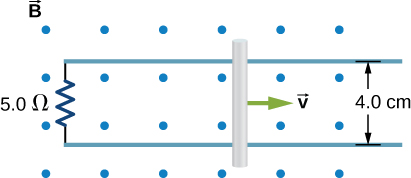
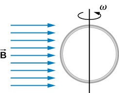

Phy 222 Homework 10: Induction
Problem 10.1
A 50-turn coil has a diameter of \(15 \, \text{cm}\). The coil is placed in a spatially uniform magnetic field of magnitude \(0.50 \, \text{T}\) so that the face of the coil and the magnetic field are perpendicular. Find the magnitude of the emf induced in the coil if the magnetic field is reduced to zero uniformly in
- \(0.10 \, \text{s}\)
- \(1.0 \, \text{s}\)
- \(60 \, \text{s}\).
Problem 10.2
The magnetic field through a circular loop of radius 10.0 cm varies with time as shown below. The field is perpendicular to the loop. Plot the magnitude of the induced emf in the loop as a function of time.

Problem 10.3
A current is induced in a circular loop of radius \(1.5 \, \text{cm}\) between two poles of a horseshoe electromagnet when the current in the electromagnet is varied. The magnetic field in the area of the loop is perpendicular to the area and has a uniform magnitude. If the rate of change of magnetic field is \(10 \, \text{T/s}\), find the magnitude and direction of the induced current if the resistance of the loop is \(25 \, \Omega\).
Problem 10.4
A coil with \(50\) turns and area \(10 \, \text{cm}^2\) is oriented with its plane perpendicular to a \(0.75 \, \text{T}\) magnetic field. If the coil is flipped over (rotated through \(180^\circ\)) in \(0.20 \, \text{s}\), what is the average emf induced in it?
Problem 10.5
A rectangular wire loop with length \(a\) and width \(b\) lies in the $xy$-plane, as shown below. Within the loop there is a time-dependent magnetic field given by \(\mathbf{B}(t) = C \left( x \cos(\omega t) \, \hat{\mathbf{i}} + y \sin(\omega t) \, \hat{\mathbf{k}} \right)\), with \(\mathbf{B}(t)\) in tesla. Determine the emf induced in the loop as a function of time.

Problem 10.6
When a magnetic field is first turned on, the flux through a 20-turn loop varies with time according to \(\Phi_m = 5.0t^2 - 2.0t\), where \(\Phi_m\) is in milliwebers, \(t\) is in seconds, and the loop is in the plane of the page with the unit normal pointing outward.
- What is the emf induced in the loop as a function of time?
- What is the direction of the induced current at \(t = 0\)
- What is the direction of the induced current at \(t = 0.10 \, \text{s}\)
- What is the direction of the induced current at \(t = 1.0 \, \text{s}\)
- What is the direction of the induced current at \(t = 2.0 \, \text{s}\)?
Problem 10.7
Use Lenz’s law to determine the direction of induced current in each case.

Problem 10.8
A \(25 \, \text{cm}\) rod moves at \(5.0 \, \text{m/s}\) in a plane perpendicular to a magnetic field of strength \(0.25 \, \text{T}\). The rod, velocity vector, and magnetic field vector are mutually perpendicular, as indicated in the accompanying figure. Calculate
- the magnetic force on an electron in the rod
- the electric field in the rod
- the potential difference between the ends of the rod
- What is the speed of the rod if the potential difference is \(1.0 \, \text{V}\)?

Problem 10.9
The rod shown below moves to the right on essentially zero-resistance rails at a speed of \(v = 3.0 \, \text{m/s}\). If \(B = 0.75 \, \text{T}\) everywhere in the region, what is the current through the \(5.0 \, \Omega\) resistor? Does the current circulate clockwise or counterclockwise?

Problem 10.10
Design a current loop that, when rotated in a uniform magnetic field of strength \(0.10 \, \text{T}\), will produce an emf \(\varepsilon = \varepsilon_0 \sin(\omega t)\), where \(\varepsilon_0 = 110 \, \text{V}\) and \(\omega = 120\pi \, \text{rad/s}\).
Problem 10.11
A circular loop of wire of radius \(10 \, \text{cm}\) is mounted on a vertical shaft and rotated at a frequency of \(5 \, \text{cycles per second}\) in a region of uniform magnetic field of \(2 \, \text{Gauss}\) perpendicular to the axis of rotation.
- Find an expression for the time-dependent flux through the ring.
- Determine the time-dependent current through the ring if it has a resistance of \(10 \, \Omega\).

\(~\)